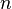
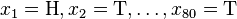

目录视图
目录视图 摘要视图
摘要视图 订阅
订阅版权声明：本文为博主原创文章，未经博主允许不得转载。
给定一个概率分布，假定其概率密度函数（连续分布）或概率聚集函数（离散分布）为，以及一个分布参数，我们可以从这个分布中抽出一个具有个值的采样，通过利用，我们就能计算出其概率：
但是，我们可能不知道的值，尽管我们知道这些采样数据来自于分布。那么我们如何才能估计出呢？一个自然的想法是从这个分布中抽出一个具有个值的采样，然后用这些采样数据来估计.
一旦我们获得，我们就能从中找到一个关于的估计。最大似然估计会寻找关于的最可能的值（即，在所有可能的取值中，寻找一个值使这个采样的“可能性”最大化）。这种方法正好同一些其他的估计方法不同，如的非偏估计，非偏估计未必会输出一个最可能的值，而是会输出一个既不高估也不低估的值。
要在数学上实现最大似然估计法，我们首先要定义似然函数:
并且在的所有取值上，使这个函数最大化。这个使可能性最大的值即被称为的最大似然估计。
注意
- 这里的似然函数是指不变时，关于的一个函数。
- 最大似然估计函数不一定是惟一的，甚至不一定存在。
例子
离散分布，离散有限参数空间
考虑一个抛硬币的例子。假设这个硬币正面跟反面轻重不同。我们把这个硬币抛80次（即，我们获取一个采样并把正面的次数记下来，正面记为H，反面记为T）。并把抛出一个正面的概率记为，抛出一个反面的概率记为（因此，这里的即相当于上边的）。假设我们抛出了49个正面，31个反面，即49次H，31次T。假设这个硬币是我们从一个装了三个硬币的盒子里头取出的。这三个硬币抛出正面的概率分别为,,.这些硬币没有标记，所以我们无法知道哪个是哪个。使用最大似然估计，通过这些试验数据（即采样数据），我们可以计算出哪个硬币的可能性最大。这个似然函数取以下三个值中的一个：
我们可以看到当时，似然函数取得最大值。这就是的最大似然估计。
离散分布，连续参数空间
现在假设例子1中的盒子中有无数个硬币，对于中的任何一个， 都有一个抛出正面概率为的硬币对应，我们来求其似然函数的最大值：

其中. 我们可以使用微分法来求最值。方程两边同时对取微分，并使其为零。
其解为,，以及.使可能性最大的解显然是（因为和这两个解会使可能性为零）。因此我们说最大似然估计值为.
这个结果很容易一般化。只需要用一个字母代替49用以表达伯努利试验中的被观察数据（即样本）的“成功”次数，用另一个字母代表伯努利试验的次数即可。使用完全同样的方法即可以得到最大似然估计值:
对于任何成功次数为，试验总数为的伯努利试验。
连续分布，连续参数空间
现在有个正态随机变量的采样点，要求的是一个这样的正态分布，这些采样点分布到这个正态分布可能性最大（也就是概率密度积最大，每个点更靠近中心点），其个正态随机变量的采样的对应密度函数（假设其独立并服从同一分布）为：
或：
- ,
这个分布有两个参数：.有人可能会担心两个参数与上边的讨论的例子不同，上边的例子都只是在一个参数上对可能性进行最大化。实际上，在两个参数上的求最大值的方法也差不多：只需要分别把可能性在两个参数上最大化即可。当然这比一个参数麻烦一些，但是一点也不复杂。使用上边例子同样的符号，我们有.
最大化一个似然函数同最大化它的自然对数是等价的。因为自然对数log是一个连续且在似然函数的值域内严格递增的上凸函数。[注意：可能性函数（似然函数）的自然对数跟信息熵以及Fisher信息联系紧密。]求对数通常能够一定程度上简化运算，比如在这个例子中可以看到：

这个方程的解是.这的确是这个函数的最大值，因为它是里头惟一的一阶导数等于零的点并且二阶导数严格小于零。
同理，我们对 求导，并使其为零。
求导，并使其为零。

这个方程的解是 .
.
因此，其关于的最大似然估计为：
 .
.
性质
泛函不变性（Functional invariance）
如果是的一个最大似然估计，那么的最大似然估计是.函数g无需是一个一一映射。请参见George Casella与Roger L. Berger所著的Statistical Inference定理Theorem 7.2.10的证明。（中国大陆出版的大部分教材上也可以找到这个证明。）
渐近线行为
最大似然估计函数在采样样本总数趋于无穷的时候达到最小方差（其证明可见于Cramer-Rao lower bound）。当最大似然估计非偏时，等价的，在极限的情况下我们可以称其有最小的均方差。 对于独立的观察来说，最大似然估计函数经常趋于正态分布。
偏差
最大似然估计的偏差是非常重要的。考虑这样一个例子，标有1到n的n张票放在一个盒子中。从盒子中随机抽取票。如果n是未知的话，那么n的最大似然估计值就是抽出的票上标有的n，尽管其期望值的只有.为了估计出最高的n值，我们能确定的只能是n值不小于抽出来的票上的值。
注意:
最大似然估计是个概率学的问题，其作用对象是一次采样的数据（包含了很多特征信息点，知道其满足什么分布，如高斯分布，但参数未知，从而转换为一个参数估计的问题），最大似然估计的作用是，利用一次采样的数据（不完整的数据，以抛硬币的例子来说明最贴切），来估计完整数据的真实分布，但该估计是最大可能的估计，而不是无偏估计。
- 顶
- 0
- 踩
- 0
- 上一篇聚类算法之高斯混合模型
- 下一篇EM算法
- 猜你在找


{kind=link}
暂无评论